Regrid MLD from deBoyer et al (2004)#
This notebook documents the steps needed to regrid the MLD dataset to a nominal 1/4 deg MOM grid (tx1_4).
%matplotlib inline
import xarray as xr
import xesmf
import numpy as np
from datetime import datetime
import numpy as np
import matplotlib.pyplot as plt
fname = '../../mesh/tx1_4_grid.nc'
ds_out = xr.open_dataset(fname).rename({'tlon': 'lon','tlat': 'lat', 'qlon': 'lon_b','qlat': 'lat_b',})
ds_out
<xarray.Dataset>
Dimensions: (ny: 1080, nx: 1440, nxp: 1441, nyp: 1081)
Dimensions without coordinates: ny, nx, nxp, nyp
Data variables: (12/20)
lon (ny, nx) float64 ...
lat (ny, nx) float64 ...
ulon (ny, nxp) float64 ...
ulat (ny, nxp) float64 ...
vlon (nyp, nx) float64 ...
vlat (nyp, nx) float64 ...
... ...
tarea (ny, nx) float64 ...
tmask (ny, nx) float64 ...
angle (ny, nx) float64 ...
depth (ny, nx) float64 ...
ar (ny, nx) float64 ...
egs (ny, nx) float64 ...
Attributes:
Description: CESM MOM6 1/4 degree grid
Author: Frank, Fred, Gustavo (gmarques@ucar.edu)
Created: 2022-12-27T10:20:11.076318
type: Glogal 1/4 degree grid fileinfile = '/glade/campaign/cgd/oce/datasets/obs/mld/deBoyer_2004/mld_DR003_c1m_reg2.0.nc'
ds_in = xr.open_dataset(infile, decode_times=False)
ds_in.mld[0,:].plot(vmin=0, vmax=1000);
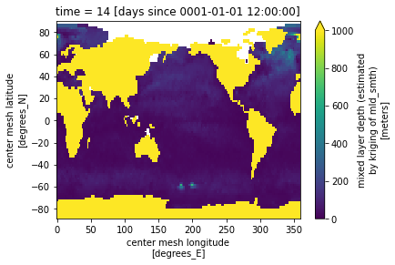
# mask bad values
for t in range(len(ds_in.time)):
tmp = np.nan_to_num(ds_in.mld[t,:].values, copy=True, posinf=0, neginf=0)
ds_in['mld'][t,:,:] = tmp #.where(tmp == tmp).where(tmp>=0).where(tmp<1.0e6)
ds_in.mld[1,:].where(ds_in.mask==1).plot(vmin=0, vmax=1000)
<matplotlib.collections.QuadMesh at 0x2b50104d2a60>
def regrid_mld(fld, ds_in, ds_out, method='bilinear'):
regrid = xesmf.Regridder(
ds_in,
ds_out,
method=method,
periodic=True,
)
fld_out = regrid(ds_in[fld])
return fld_out
ds_out = regrid_mld('mld', ds_in, ds_out).rename('mld')
Visual inspection#
Make sure original and remapped plots look similar.
# visual inspection. Make sure original and remapped plots look similar
for t in range(len(ds_in.time)):
fig, axes = plt.subplots(nrows=1, ncols=2, figsize=(18,4))
ds_out[t,:,:].plot.pcolormesh(ax=axes[0], vmin=0,vmax=1000)
ds_in['mld'][t,:,:].plot.pcolormesh(ax=axes[1], vmin=0,vmax=1000)
axes[0].set_title('Remapped')
axes[1].set_title('Original grid')
plt.suptitle('Month ='+ str(t+1))
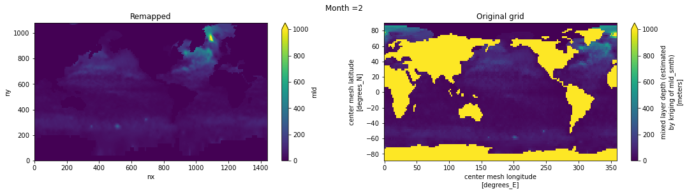
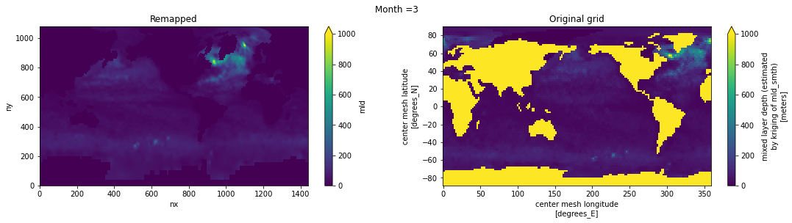
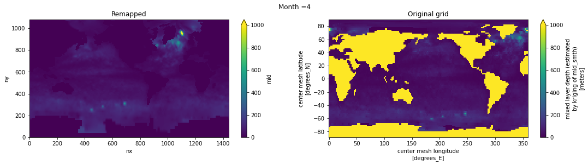
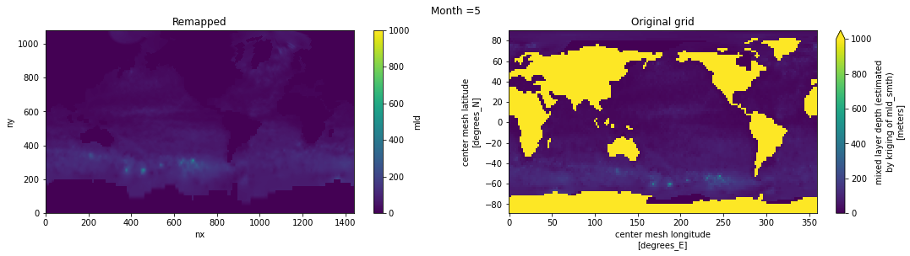
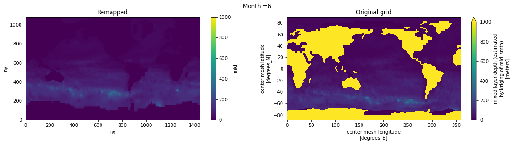
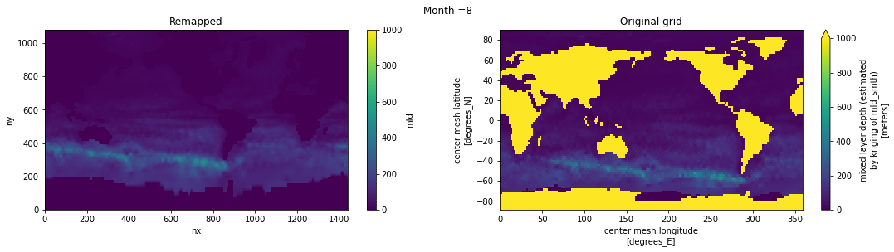
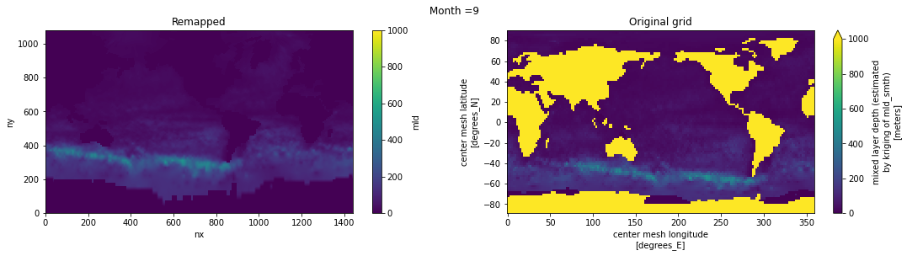
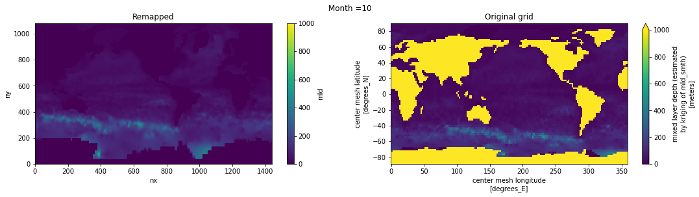
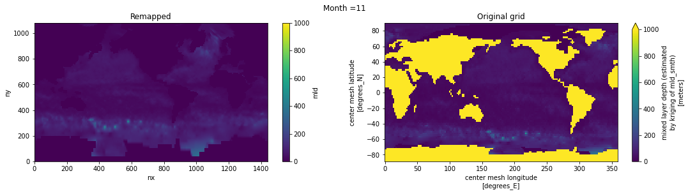
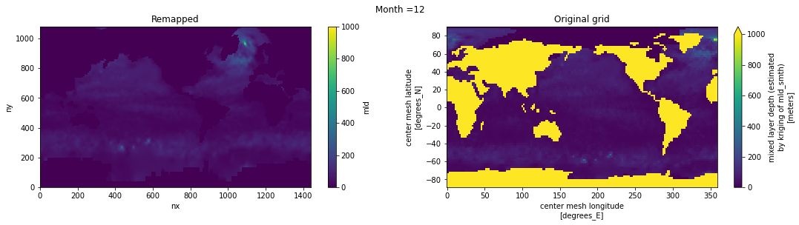
ds_out.attrs['author'] = 'Gustavo Marques (gmarques@ucar.edu)'
ds_out.attrs['description'] = 'MLD using density criterion of 0.03 kg/m3 difference (de Boyer Montegut et al., JGR 2004)'
ds_out.attrs['date'] = datetime.now().isoformat()
ds_out.attrs['infile'] = infile
ds_out.attrs['url'] = 'https://github.com/NCAR/tx1_4/mld/deBoyer2004/'
# save
fname = 'deBoyer04_MLD_remapped_to_tx1_4.nc'
ds_out.to_netcdf(fname)